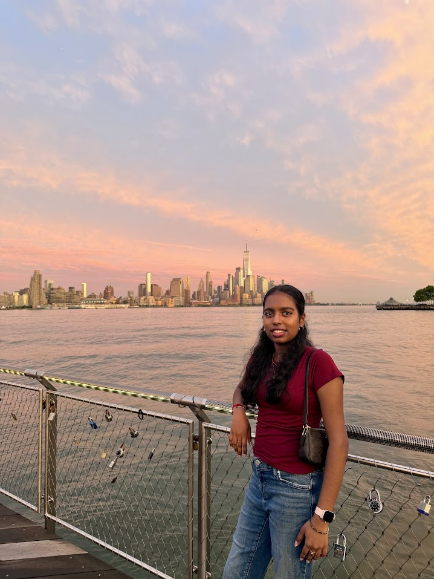

Computer Science & Business Intelligence and Analytics Student at UT Dallas
Passionate about building innovative solutions and seeking internship opportunities to apply my skills in real-world projects.
Years Coding
Projects/Experiences

Hi, I'm Shaswatt Iswarya Sakthivel, a Computer Science major at the University of Texas at Dallas pursuing a minor in Business Intelligence and Analytics.
EmotionAI: Facial Emotion Recognition
Designed and implemented a facial emotion recognition model in Jupyter Notebook. Researched machine learning techniques for emotion classification, analyzed model performance, and documented the complete project in a research paper.
Read Research PaperParticipated in research focused on Large Language Models (LLMs) and artificial intelligence. Contributing to experimentation, technical documentation, and the development of a research paper.
Interested in Software Engineering, Artificial Intelligence, and Business internships.
Download Resumeishukallai@gmail.com